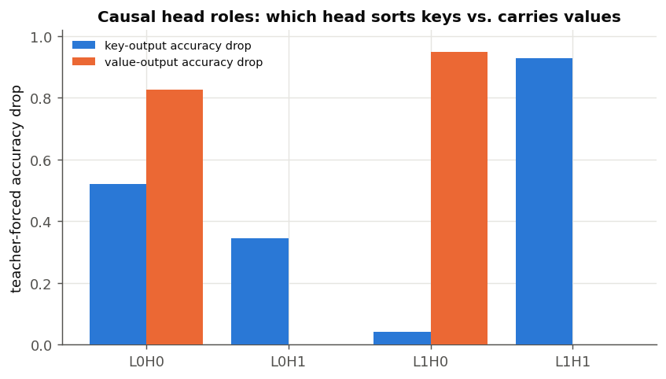
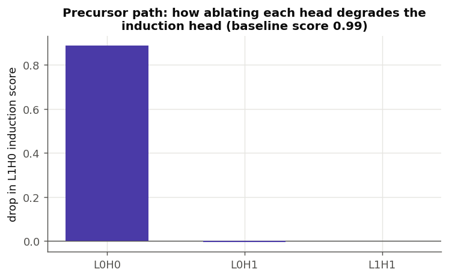
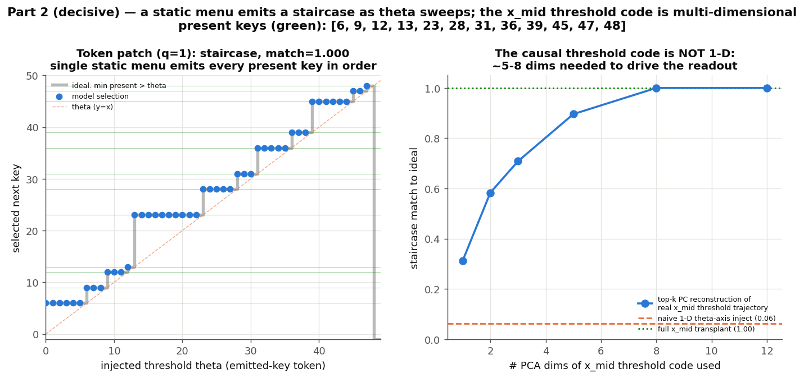
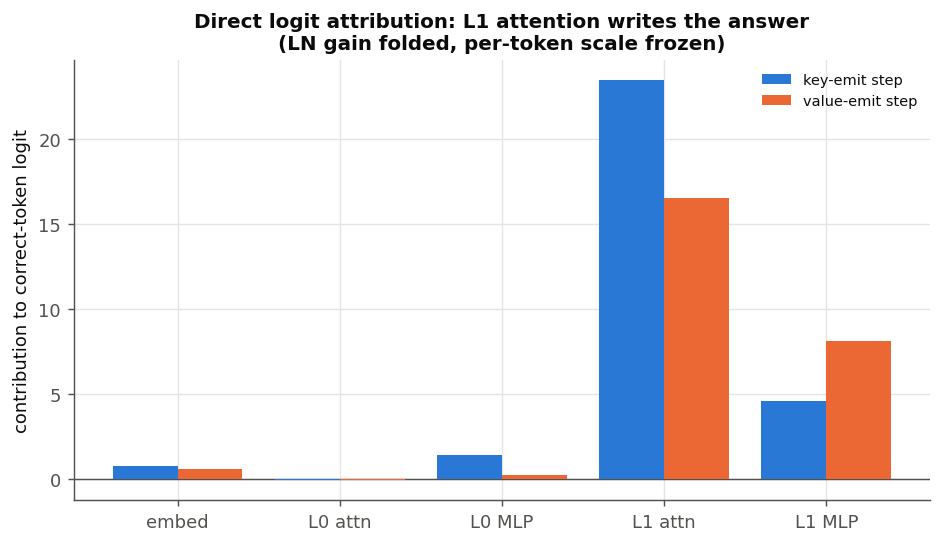
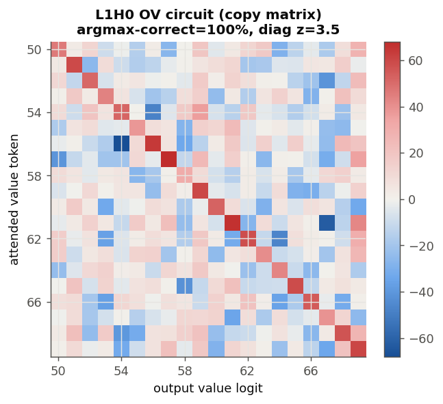
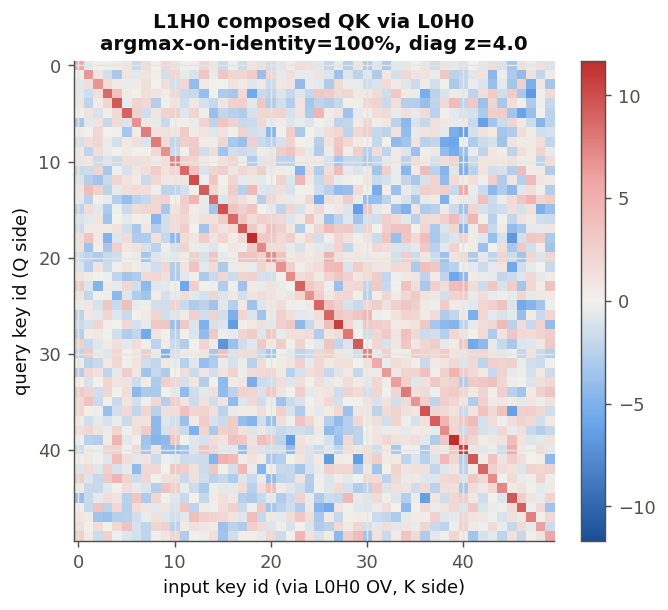

Techniques
Causal methods
Ablation, patching, logit attribution, and reading the weights
Observation generates hypotheses; intervention tests them. In this lesson we stop looking and start breaking things — deleting components, swapping activations, tracing where the answer is written — and then, at the end, reading the circuit straight out of the weights. This is the heart of mechanistic interpretability: the point where a picture becomes a proof.
Ablation: delete it and see what breaks
The simplest causal experiment is ablation: remove a component's contribution to the residual stream (set its output to zero), leave everything else untouched, and measure how much accuracy drops. A big drop means the component was doing something necessary; no drop means it was not.
Ablation — zero out one component (a head's output, an MLP's output, a single neuron) and re-measure the model. It answers "is this part necessary?" Caveat: zeroing pushes the model slightly off-distribution, so ablation measures necessity-under-ablation, not the exact everyday contribution.
Per-position ablation reveals who does what
A plain accuracy drop is blunt. We can sharpen it by scoring the key-emitting and value-emitting positions separately. Now ablation tells us not just "does this head matter" but "does it matter for the keys or the values?"

This is the pattern to internalize: the heatmap suggested L1H0 copies values; the ablation proves that removing it destroys value output specifically. Observation plus intervention.
Tracing a dependency: the precursor
Ablation also finds connections. An induction head cannot work alone — it needs an earlier "precursor" head to set up the information it matches on. We can find that partner by ablating each other head and asking which one, when removed, kills the induction head's behaviour.

Activation patching: transplanting a thought
Ablation asks "is it necessary?" Activation patching asks the sharper question "what information does this activation carry?" You run the model on input A, save an internal activation, then run it on input B but overwrite that activation with the saved one from A — and see whether B's behaviour changes toward A's. If it does, that activation carried the thing that differed.
It isolates which piece of internal state is responsible for a decision, at which position and layer. It is how we cracked the hardest part of this model — how it decides which key to emit next. We call that decision a comparison against a running "threshold" (the largest key emitted so far).
The decisive experiment: hold the input fixed (so the set of available keys — the "menu" — cannot change), and patch in a different threshold at one output step. If the model is really doing "smallest available key greater than the threshold," then sweeping the injected threshold should march the output through the present keys in order — a staircase.

Direct logit attribution: who writes the answer
One more causal-flavoured tool. Because every component adds into the residual stream, and the final read-out is (approximately) linear, we can split the final prediction into a sum of contributions — one per component — and ask which component actually pushed up the correct answer's logit. This is direct logit attribution.

Reading the weights directly
One last kind of evidence, and it is different from everything above: it needs no intervention and no forward pass at all. The attention head's behaviour is baked into its weight matrices, and we can read them. This is the most rigorous evidence there is — it is a statement about the model's fixed structure, not about a possibly-off-distribution experiment.
A head's OV circuit (output–value) determines what it writes once it has decided where to look; its QK circuit (query–key) determines where it looks. Both are products of weight matrices, so we can multiply them out into "token space" and ask what they do to specific tokens — purely from the weights.
Take L1H0's OV circuit and push it all the way from input value tokens to output logits. If the head copies, this map should be a diagonal: attending to value X should raise the logit of X and nothing else.

Now the QK circuit — the matching. A naive guess is that the head matches the query key against input keys by identity. Read straight from the embeddings, it does not (0% — it is not a simple induction head on raw tokens). But feed the precursor L0H0's output into the key side, and the match becomes perfect:

To read weights in token space we "fold" LayerNorm — keep its fixed rescaling and drop the data-dependent part. This is standard, and exact for the argmax structure we care about, but it is why these are called weight-space arguments: they show the circuit is built, complementing the activation experiments that show it fires.
We upgraded guesses to facts by three independent routes. Ablation: L1H0 is the value head, L1H1 the key head, L0H0 the single precursor. Patching: the next-key rule really is "smallest present key above a threshold" (the staircase). Weights: L1H0's OV is literally a copy matrix and its match runs through L0H0. When intervention and weight analysis agree, you can trust the mechanism.
These methods tell us where computation happens, what it depends on, and how the circuit is built. To learn what the activations actually represent, we need one more family of tools: probing and geometry.